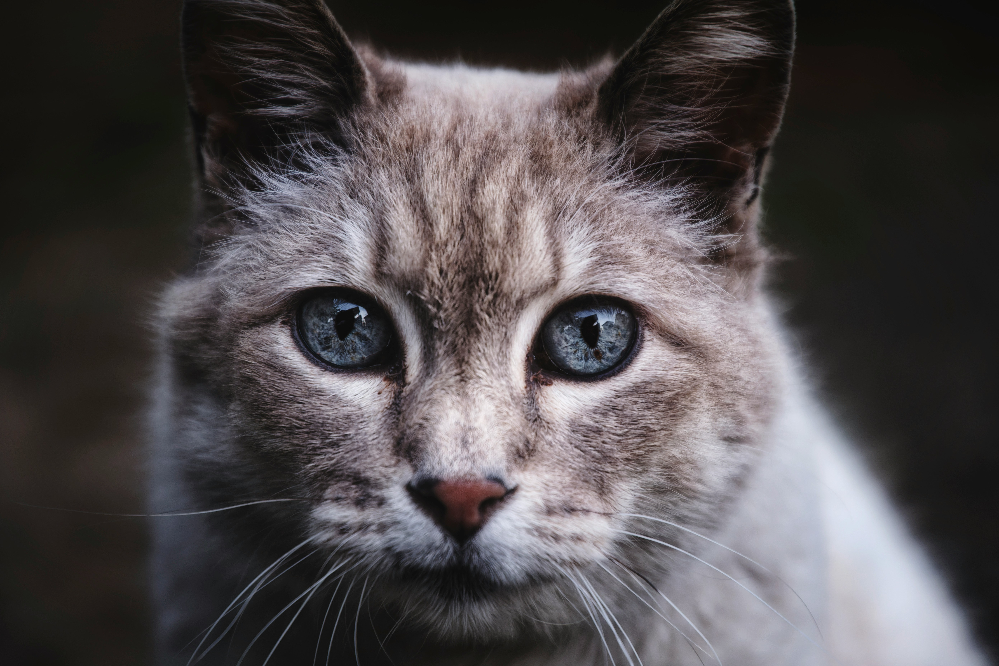
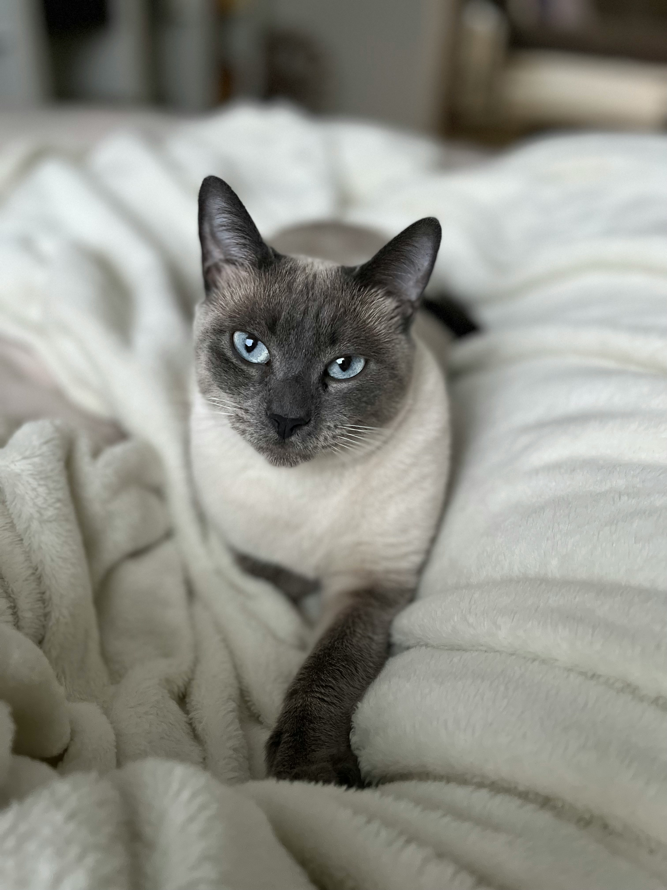
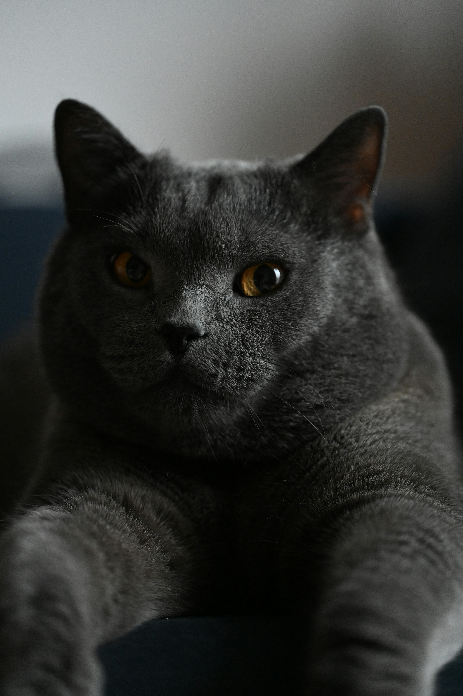
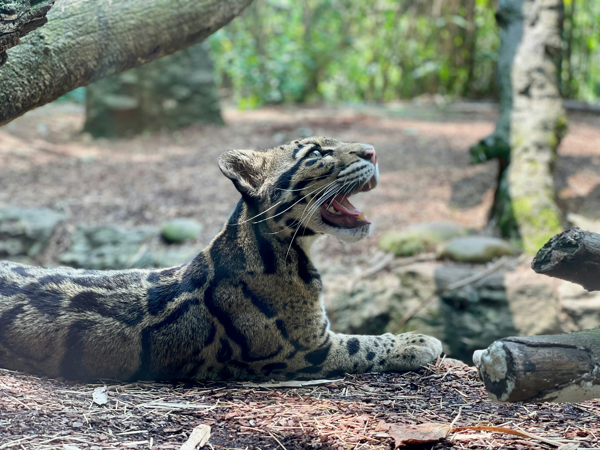

Pisica de casă sau pisica domestică este un mamifer din ordinul carnivorelor, familia Felinelor.
Este alături de oameni de peste 9500 ani și în prezent este cel mai cunoscut animal domestic în toată lumea.
Pisica trăiește în strânsă legătură cu oamenii de cel puțin 3500 de ani, fiind folosită de către egipteni pentru a ține departe șoarecii.
Pisicile de casă sunt de dimensiuni mici până la medii, cu greutatea medie între 2,5 și 7 kg, dar aceasta poate varia în funcție de rasă, dietă și stil de viață.
Au o blană densă, în culori și modele diverse, cum ar fi alb, negru, gri, portocaliu sau tigrat. Pisicile sunt cunoscute pentru agilitatea lor, datorată scheletului flexibil și ghearelor retractabile, care le permit să escaladeze cu ușurință și să prindă prada.

Pisicile sălbatice sunt feline mici și medii, găsite în diverse regiuni ale lumii. Ele aparțin mai multor specii, cum ar fi pisica sălbatică europeană (Felis silvestris), pisica sălbatică africană (Felis lybica), pisica cu picioare negre (Felis nigripes), și pisica de junglă (Felis chaus). Aceste pisici sunt strămoșii pisicilor domestice și au multe trăsături comune cu acestea, dar sunt mai adaptate la viața în sălbăticie.
Habitat: Diverse medii, de la păduri și savane până la deșerturi și zone montane text italic.
Aspect fizic: Blană mai groasă și deseori mai colorată pentru a le asigura camuflaj în mediul lor natural
Comportament:Solitare și teritoriale, vânători abili care își urmăresc prada cu atenție. Sunt active, în special, noaptea (nocturne), pentru a evita prădătorii și a prinde prada mai ușor.
Pisicile sălbatice joacă un rol esențial în ecosistem, controlând populația de rozătoare și alte animale mici, ceea ce contribuie la echilibrul ecologic.
Aspect:Blană lungă, densă, față plată și ochi mari rotunzi.
Personalitate:Calmă și afectuoasă, iubitoare de confort.
Ingrijire:Necesită periaj frecvent datorită blănii lungi, predispuse la încurcare.

Aspect:Corp subțire, elegant, cu ochi albaștri strălucitori și urechi mari.
Personalitate:Vocală și atașată de oameni; comunicativă și jucăușă.
Ingrijire:Blană scurtă și ușor de întreținut; necesită multă atenție și stimulare mentală.
Aspect:Corp robust, blană densă, de obicei de culoare gri-albastruie, și ochi rotunzi.
Personalitate:Calmă, independentă, dar afectuoasă. O alegere bună pentru familii.
Ingrijire:Blana scurtă necesită doar periaj ocazional.
Habitat:Se găsește în pădurile din Europa și vestul Asiei.
Comportament:Este solitară și activă mai ales noaptea, fiind extrem de rezervată față de oameni.
Caracteristici:Are o blană groasă, cu dungi și o coadă scurtă, stufoasă, cu vârful rotunjit. Aceasta seamănă cu pisica domestică, dar este mai robustă și mai mare.

Habitat:Trăiește în regiunile umede și ierboase din Asia de Sud, Orientul Mijlociu și nordul Africii.
Comportament:Este adaptată atât la habitatele de câmpie, cât și la cele de mlaștină, fiind un vânător eficient al micilor mamifere și păsări.
Caracteristici: Este de talie medie, cu o blană galben-maronie, urechi ascuțite, iar pe vârfurile acestora are mici smocuri de păr.
| Semestru | Total ore | Evaluarea | Nr de credite | |||
|---|---|---|---|---|---|---|
| Total ore semestru | Inclusiv | |||||
| Curs | Laborator | LI | ||||
| I | 150 | 30 | 45 | 75 | Examen | 5 |
| II | 90 | 30 | 30 | 30 | Examen | 4 |
| Total ore | 240 | Total credite | 9 | |||